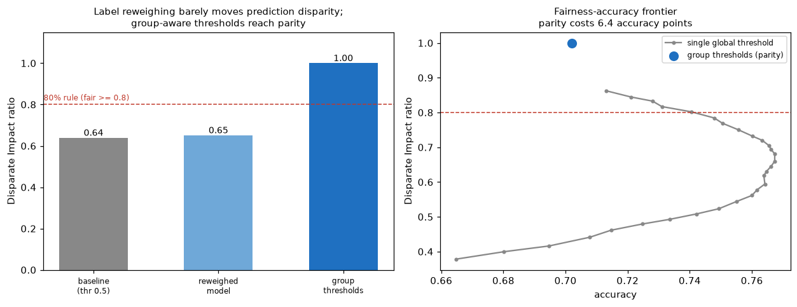
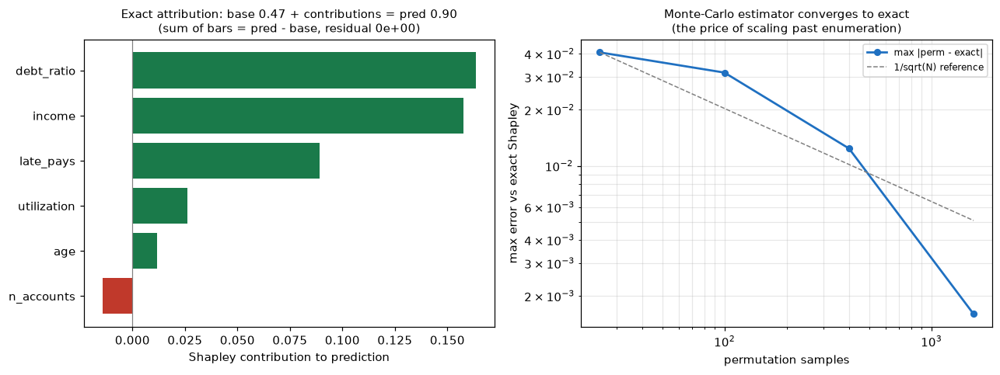

精度が高いだけのAIは信頼できない。不当な格差を測って是正し、どんな予測も人が検証できる形に分解する——これがIBMの掲げるトラストワージーAI（AIF360/AIX360）の核。ここでは①アルゴリズム公平性（disparate impactの測定と是正、reweighingの数式的閉ループ＋グループ別しきい値）②厳密Shapley値による説明性（効率性公理を残差0で検証）——を定義とゲーム理論から実装する。
精度が高くても不公平はありうる：保護属性を特徴に使わなくても、プロキシ（相関する特徴）が属性を漏らし、あるグループの陽性率が低くなる＝disparate impact。指標を定義から実装：DIR（非優遇/優遇の陽性率比、80%ルール＝0.8以上で公平）・人口統計パリティ差・equalized odds差。是正はまずreweighing（AIF360前処理）——重み w(a,y)=P(a)P(y)/P(a,y) で属性とラベルを独立化し、重み付き陽性率がグループ間で厳密一致（残差<1e-9）を閉ループ検証。ただしreweighingはラベルバイアスには効くがプロキシ漏れには効かない（DIR 0.64→0.65と正直な限界）。予測格差を実際に閉じるのはグループ別しきい値（後処理・reject-option系）：各グループの陽性率を共通目標に合わせDIR→1.00、ただしパリティは無料でない＝精度6.4ptのトレードオフ。審査会が実際に議論する数字。

信頼できるAIには、任意の1予測を人（監査人）が検証できる特徴寄与に分解する説明が要る。協力ゲーム理論のShapley値は効率性・対称性・null-player・加法性を満たす唯一の帰属で、少数特徴なら全連合を列挙して厳密に計算できる。価値関数 v(S)=E_bg[f(x_S, X_−S)]（背景データで周辺化）から6特徴の厳密Shapleyを算出。核心は効率性公理 Σφ_i = f(x) − E[f]——寄与の和が予測にぴったり一致（残差0で検証、"辻褄が合う"を数式で保証）。さらに大規模で使う順列モンテカルロ近似が、サンプル増で厳密値へ1/√Nで収束（最大誤差0.041→0.002）——列挙が高すぎる時に受け入れる誤差を定量化。

関連（実装済み）：応用AI（アップリフト・ドリフト監視）・半導体スマートAI。出所：ibm/{fairness_mitigation, shapley_explain}.py。